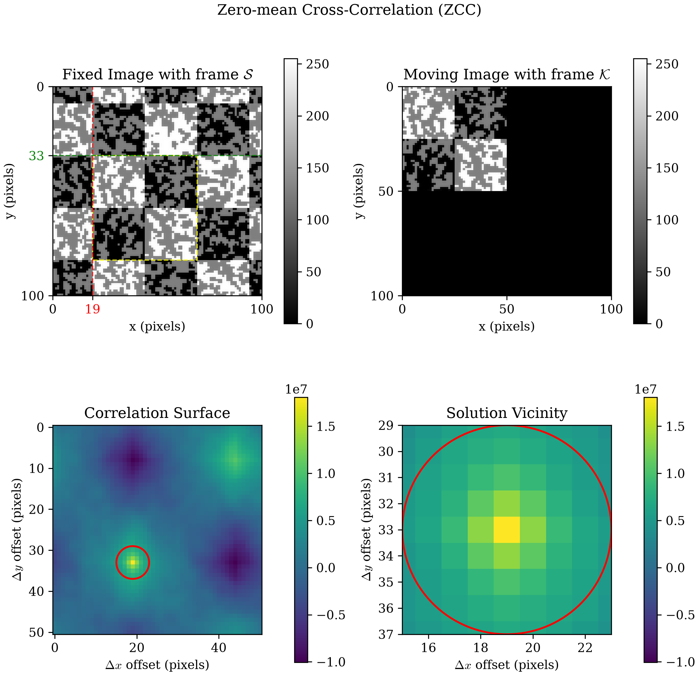
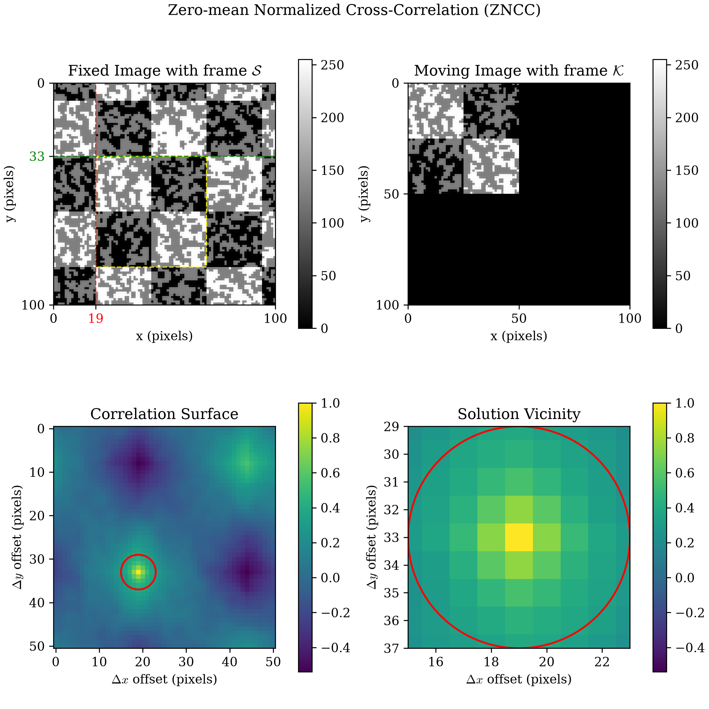
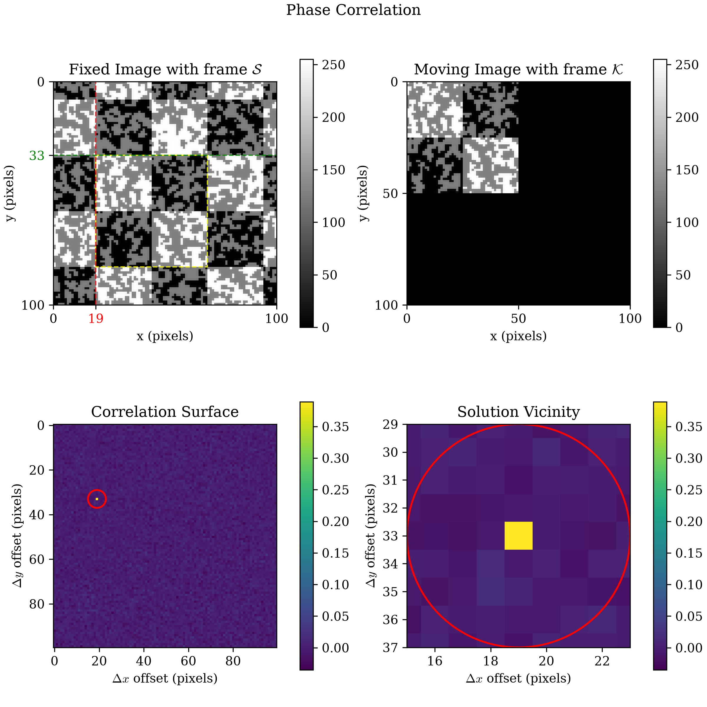
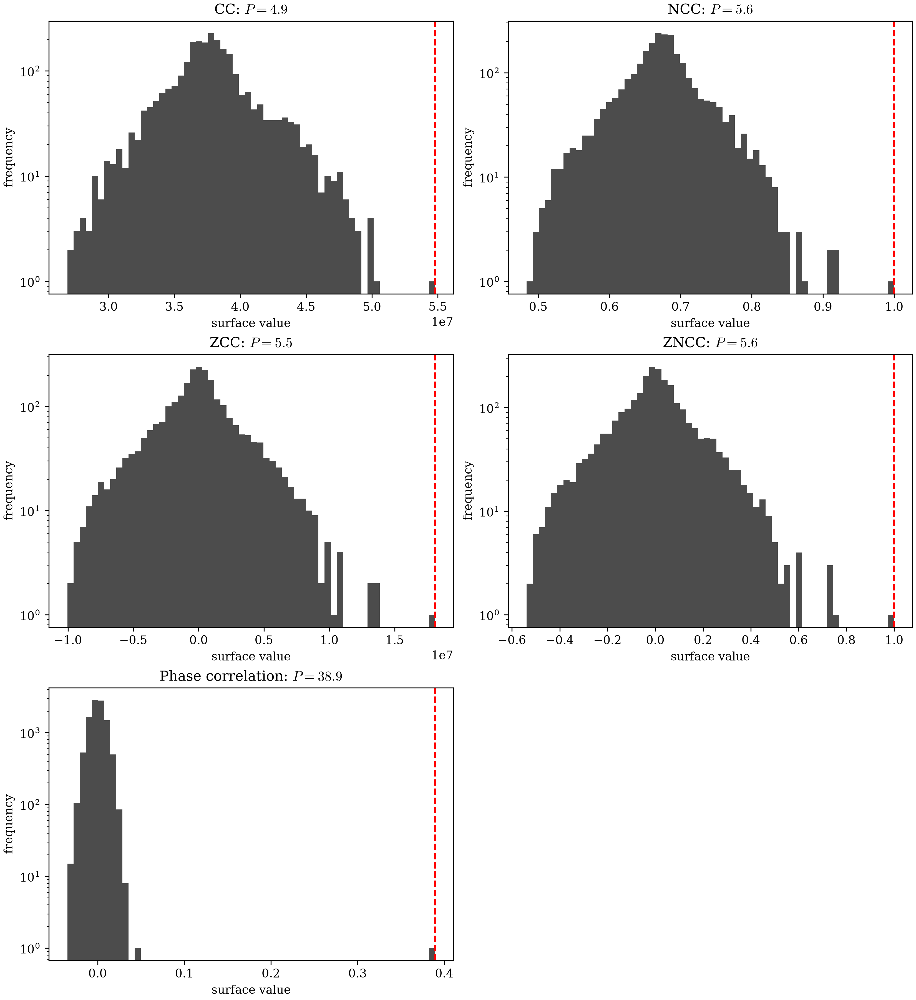

CC Visualization (page 2)
CC Visualization compares all four correlation
criteria side by side as heatmaps, sharing one figure. This page instead
shows each criterion on its own, in a four-panel composite reproducing a
reference composite-figure layout used in prior DIC tooling, via
dictk.image.spatial_correlation_quadrant_plot:
the search area with the found kernel marked (Fixed Image), the kernel
itself zero-padded to the search area's shape (Moving Image), the full
correlation surface, and a zoomed Solution Vicinity around its peak —
closer to how a single registration result is typically inspected in
practice than a side-by-side comparison of criteria.
reference_image, p0, current_image, kernel_margin, search_margin,
kernel, and search are the same as in Cross Correlation
(CC) and CC Visualization:
from dictk.image import read, translate, PixelCoordinate, subimage
reference_image = read(path="checkerboard0.png")
p0 = PixelCoordinate(x=100, y=75)
current_image = translate(arr=reference_image, dx=-6, dy=8)
kernel_margin = 25
kernel = subimage(
image=reference_image,
origin=PixelCoordinate(x=p0.x - kernel_margin, y=p0.y - kernel_margin),
width=2 * kernel_margin,
height=2 * kernel_margin,
)
search_margin = 50
search_center = p0
search = subimage(
image=current_image,
origin=PixelCoordinate(
x=search_center.x - search_margin, y=search_center.y - search_margin
),
width=2 * search_margin,
height=2 * search_margin,
)
Unlike CC Visualization's panels, whose axes are
the candidate offset alone, the Fixed Image panel
below plots the search area in its own pixel frame , with a
yellow dashed box marking where the kernel was found and red/green dashed
guide lines through that box's origin — the same
quantity Cross Correlation (CC) solves
for by hand. The Correlation Surface panel marks that same peak with a red
circle of radius vicinity_margin (4 pixels by default) — exactly the
region the Solution Vicinity panel zooms into, so the same circle reappears
there too, now clipped by that panel's own edges.
Cross-Correlation (CC)
from dictk.correlation import cc
from dictk.image import spatial_correlation_quadrant_plot
spatial_correlation_quadrant_plot(
kernel=kernel,
search=search,
correlation_surface=cc(kernel=kernel, search=search),
title="Cross-Correlation (CC)",
path="cc_visualization_page_2_cc.png",
)
Saved: cc_visualization_page_2_cc.png

Normalized Cross-Correlation (NCC)
from dictk.correlation import ncc
spatial_correlation_quadrant_plot(
kernel=kernel,
search=search,
correlation_surface=ncc(kernel=kernel, search=search),
title="Normalized Cross-Correlation (NCC)",
path="cc_visualization_page_2_ncc.png",
)
Saved: cc_visualization_page_2_ncc.png

Zero-mean Cross-Correlation (ZCC)
from dictk.correlation import zcc
spatial_correlation_quadrant_plot(
kernel=kernel,
search=search,
correlation_surface=zcc(kernel=kernel, search=search),
title="Zero-mean Cross-Correlation (ZCC)",
path="cc_visualization_page_2_zcc.png",
)
Saved: cc_visualization_page_2_zcc.png

Zero-mean Normalized Cross-Correlation (ZNCC)
from dictk.correlation import zncc
spatial_correlation_quadrant_plot(
kernel=kernel,
search=search,
correlation_surface=zncc(kernel=kernel, search=search),
title="Zero-mean Normalized Cross-Correlation (ZNCC)",
path="cc_visualization_page_2_zncc.png",
)
Saved: cc_visualization_page_2_zncc.png

dictk.translation.locate's own underlying skimage.registration.phase_cross_correlation call is built on the same combination (see Correlation Criteria).All four land on the same peak, pixels, since kernel and search here share identical brightness
and contrast (both come from checkerboard0.png, only translated) — the
same reason CC Visualization gives for its own
matching peaks. What differs between the four is what each panel's
colorbar reveals about how safely that peak can be trusted once
brightness or contrast do differ, as Correlation
Criteria covers in detail.
Phase Correlation
Every panel above comes from a spatial-domain criterion —
dictk.correlation's cc/ncc/zcc/
zncc, sliding kernel over search one window at a time. There's a
second way to get an equivalent answer: all at once, in the Fourier
domain, via
dictk.correlation.phase_correlation
— the same computation
dictk.translation.locate already
runs internally via skimage.registration.phase_cross_correlation. Unlike
its spatial-domain siblings, there's only one Fourier-domain flavor here,
so phase_correlation_quadrant_plot
takes kernel/search directly rather than a pre-computed surface — no
method to choose, nothing to compute beforehand:
from dictk.image import phase_correlation_quadrant_plot
phase_correlation_quadrant_plot(
kernel=kernel,
search=search,
path="cc_visualization_page_2_phase.png",
)
Saved: cc_visualization_page_2_phase.png

checkerboard0.png.That sharpness isn't just a visual impression. Define a correlation surface's peak prominence as how many standard deviations above its own mean the peak sits — a scale-independent way to compare surfaces with very different raw units (CC's arbitrary sums, NCC/ZNCC's -bounded values, phase correlation's own normalized range):
for a correlation surface flattened to its values. By this measure, phase correlation's peak is dramatically higher:
CC: prominence P = 4.93
NCC: prominence P = 5.60
ZCC: prominence P = 5.48
ZNCC: prominence P = 5.60
Phase correlation: prominence P = 38.91
A histogram of each surface's own values makes the same result visual: each panel's dashed red line is that surface's peak, at the value computed above.
import matplotlib.pyplot as plt
surfaces = {"CC": cc, "NCC": ncc, "ZCC": zcc, "ZNCC": zncc, "Phase correlation": phase_correlation}
plt.rcParams.update({"font.family": "serif", "mathtext.fontset": "cm"})
fig, axes = plt.subplots(3, 2, figsize=(11, 12), constrained_layout=True)
for ax, (name, fn) in zip(axes.flat, surfaces.items()):
flat = fn(kernel=kernel, search=search).ravel()
prominence = (flat.max() - flat.mean()) / flat.std()
ax.hist(flat, bins=60, color="black", alpha=0.7)
ax.axvline(flat.max(), color="red", linestyle="--", linewidth=1.5)
ax.set_yscale("log")
ax.set_title(f"{name}: $P = {prominence:.1f}$")
ax.set_xlabel("surface value")
ax.set_ylabel("frequency")
axes.flat[-1].axis("off") # 5 panels in a 3x2 grid -- last slot stays empty
fig.savefig("cc_visualization_page_2_prominence.png", dpi=300)
Saved: cc_visualization_page_2_prominence.png

Phase correlation's peak stands roughly seven times taller above its own
background, relative to the surface's own spread, than even ZNCC — the
most robust of the four spatial criteria. That sharpness, not just
brightness/contrast invariance, is a second, independent reason
dictk.translation.locate is built on phase correlation rather than a
spatial-domain criterion: a sharper peak is easier to locate with
confidence and precision, and harder to confuse with a nearby runner-up.
TODO: windowing for phase correlation
The "spatial vs. Fourier domain" question this section used to scope is
resolved and shipped: dictk.correlation.phase_correlation() and
phase_correlation_quadrant_plot above are both
implemented. That resolution took a different shape than originally
sketched here, worth recording:
- The domain-selector design decision (an enum belongs in the
parameter list of the function that computes the surface, decided by
the caller, never inside the plotting function itself) held up exactly
as reasoned — but rather than one generic
correlation_surface(method, domain, ...)dispatcher, it became two separate, plainly-named public functions,spatial_correlation_quadrant_plotandphase_correlation_quadrant_plot, each with their own complete docstring rather than one shared, parameterized entry point. - "CC via Fourier domain," as originally scoped, was never built.
phase_correlation()reproduces the exact computationdictk.translation.locate()already runs in production instead — a different (and better) technique than raw unnormalized CC-via-FFT, landing in the same "robust to both brightness and contrast" tier as ZNCC (see Correlation Criteria) and, as shown above, with a dramatically sharper peak than any spatial-domain criterion, ZNCC included. - "NCC/ZCC/ZNCC via Fourier domain," the genuinely hard piece, is now moot. That work only existed to give the Fourier domain the same four-way choice the spatial domain has. Adopting phase correlation as the one Fourier-domain flavor sidesteps it entirely — no per-method local-sum-of-squares algorithm (Lewis's Fast Normalized Cross-Correlation) is needed, since there's no per-method choice to support.
What's still open: windowing. Correlation
Criteria describes Hann/Hamming
windowing conceptually — tapering kernel/
search's edges toward zero before the FFT, to reduce spectral leakage
from content that doesn't tile seamlessly — but doesn't implement it.
dictk has no window()-style function yet, and phase_correlation()
applies none today.
Illustrative sketch only (not implemented, not wired up — matches the
same "sketch, don't build yet" pattern
Parallelization uses for its own
ProcessPoolExecutor example) of where a future windowing parameter
would land:
from enum import Enum
class WindowingMethod(Enum):
HANN = "hann"
HAMMING = "hamming"
def phase_correlation(
*,
kernel: np.ndarray,
search: np.ndarray,
windowing: WindowingMethod | None = None,
) -> np.ndarray:
... # unchanged behavior when windowing=None; new when set
Not scheduled work — don't start on this without Chad raising it again.